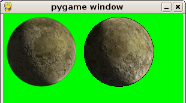

NewsFirst release!Sunday 7th January 2007I've finally gotten around to doing a release, it is version 0.0.3 (previous versions havn't been released). This version has full support for displaying in pygame and wxPython. You can download it from this location. Website SetupMonday 4th December 2006I've been working on libmng-py for a month or so now. It was my first ctypes wrapper so it's been a cool experiance. I've now finally setup a webpage and will do an inital public release in the next couple of days. [top]What is libmng-py?libmng-py is a Python wrapper around the libmng C library. It currently supports the most important parts of the library and supports displaying and usage with the most popular toolkits (such as pygame and wxPython). I started it because I need an animation format with full alpha channel support (as appose to GIF which only has a alpha mask) and no other python library supported MNG. Goals
StatusCurrently supports:
Things TodoYou can find the current list of things TODO here. [top]Frequently Asked QuestionsWhat is python?Python is cross-platform and object-oriented. It's easy-to-learn, easy-to-use, easy-to-read, easy-to-extend. It is also very important that python is increasingly popular. What is MNG?MNG (pronounced "ming") is an animated version of the PNG format. Originally designed to replace the GIF format web adoption never really gained traction. libmng-py should have full support for all mng features that libmng supports. What is JNG?JNG is a similar format to MNG but uses JPEG as it's base format. If libmng you are using was compiled with JPEG support then libmng-py should also support JNGs. Why not used GIF?GIF only has support for limited alpha, a pixel is either transparent or not. MNG has support for a proper alpha channel like PNG. This means that you can have nice blended edges and similar. GIF animations converted into MNG also are about 20% smaller! Why not use a bunch of PNGs?By using a bunch of PNGs means you have increased size. The MNG will be much smaller because the bits of the pictures which are repeated in each frame will not be replicated. A bunch of PNGs also does not have anyway to have loops,variable delays or similar. Why not use a bunch of MPEG?If you want video then MPEG and related video standards are much better for you. However these formats are not suited to graphics used in games which often need proper alpha channels so they can be blended. [top]DownloadYou can download the latest development version from the source code repository. To do this you will need to get DARCS. Then just run the following commands. darcs get --partial http://darcs.thousandparsec.net/repos/libmng-py
You can also download the latest release packages from the following
location.
[top]
ScreenshotsThe following screenshot shows the output from the pygame-example.py (the first image has is full 32bit color with alpha channel and the second image is 8bit pallette with transparent color).  [top]Related Links
[top] |